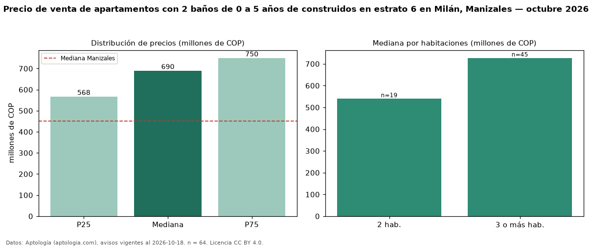

Precio de venta de apartamentos con 2 baños de 0 a 5 años de construidos en estrato 6 en Milán, Manizales — octubre 2026
COP 690 millones es el precio mediano de apartamentos con 2 baños de 0 a 5 años de construidos en estrato 6 en venta en Milán, Manizales (n = 64 avisos). Frente a la mediana de los apartamentos con 2 baños en estrato 6 en venta de Milán (COP 650 millones, n = 79), queda 6 % por encima; este segmento reúne el 81 % de esos avisos. Por metro cuadrado, la mediana es COP 7,40 millones/m² (n = 64), 1 % por encima de los apartamentos con 2 baños en estrato 6 en venta de Milán (COP 7,35 millones/m²). El área mediana anunciada es 98 m². El segmento con más oferta es el de 3 o más habitaciones (45 avisos, mediana COP 727 millones); pasar de 2 habitaciones a 3 o más habitaciones cambia la mediana +35 %. La administración mediana declarada es COP 467.000 al mes (n = 54). La mediana de todos los apartamentos en venta de Manizales es COP 450 millones (+53 % de diferencia). La mitad central de los avisos va de COP 568 millones a COP 750 millones (razón 1,3), una dispersión baja. Datos: Aptología (aptologia.com), CC BY 4.0 — https://www.aptologia.com/venta/manizales/milan. Archivos: PDF, CSV con las cifras y gráfica PNG.

| Avisos únicos | 64 |
|---|---|
| Percentil 25 | COP 567.500.000 |
| Mediana | COP 690.000.000 |
| Percentil 75 | COP 750.000.000 |
| Mediana por m² | COP 7.404.835 |
Fuente: avisos vigentes de portales inmobiliarios recopilados por Aptología, deduplicados (mínimo 30 avisos únicos por celda). Precios pedidos, no cerrados. Fecha: 2026-10-18.